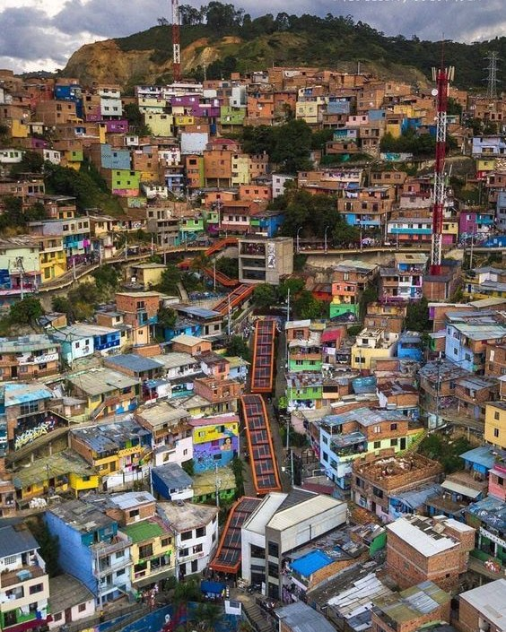
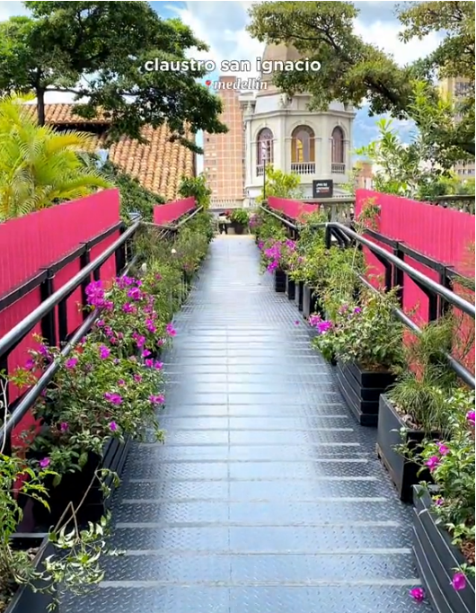
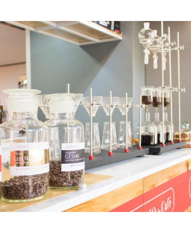
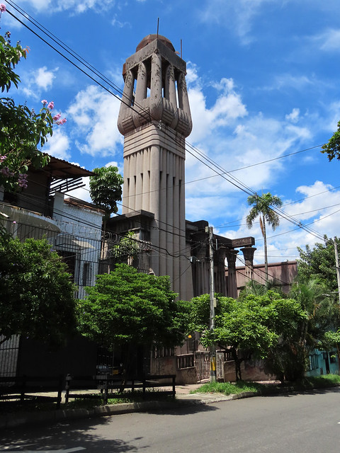

Lugares
Comuna 13
La Comuna 13 es conocida por su impresionante transformación,
es un símbolo de resiliencia y esperanza. En sus calles,
el arte urbano se fusiona con la historia,
creando un ambiente único que te invita a explorar y disfrutar.
Desde los coloridos murales hasta las historias de superación,
cada rincón tiene algo especial que contar.
Recorre sus famosas escaleras eléctricas,
déjate cautivar por el arte callejero que adorna
cada pared y vive la calidez de su gente.
¿Qué tal te pareció?
Claustro San Ignacio
El Laboratorio de Café es una empresa tostadora y
comercializadora de cafés especiales, fundada en Medellín en 2008.
Si bien hay varios puntos de venta en la ciudad,
en el centro puede encontrarse en el Museo de Antioquia,
dentro de la Plaza Botero, lo que permite tener una increíble
vista mientras se disfruta de buena bebida.
¿Qué tal te pareció?
Laboratorio de Café
El Laboratorio de Café es una empresa tostadora y
comercializadora de cafés especiales, fundada en Medellín en 2008.
Si bien hay varios puntos de venta en la ciudad,
en el centro puede encontrarse en el Museo de Antioquia,
dentro de la Plaza Botero, lo que permite tener una increíble
vista mientras se disfruta de buena bebida.
¿Qué tal te pareció?
Palacio Egipcio
El Palacio Egipcio realmente era la casa del hogar
de Don Fernando Estrada, construida entre 1928 y 1931.
Allí vivió con su esposa y sus 14 hijos,
hasta el año de su fallecimiento en 1973.
Don Fernando Estrada era un optómetra,
fundador en 1917 de Óptica Santa Lucía,
un visionario que amaba la vida y la libertad del pensamiento.
¿Qué tal te pareció?